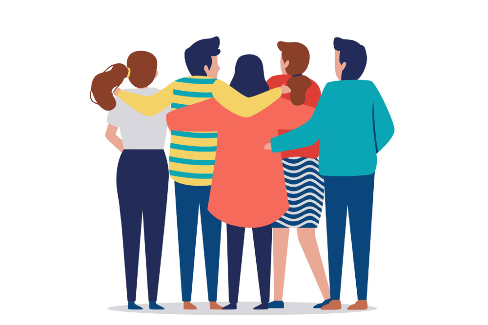

July 16, 2019

Travelling can be a great experience for a person that’s looking to explore new places, learn about new culture, try out different cuisines, socialise with people and many more. It is a kind of challenge that gets you out of your comfort zone, encourages you to push your limits and to overcome your fears. We all have our setbacks and fears that don’t let us take a step forward on the path of achieving our dreams. Travelling lets us overcome these fears and makes us go beyond our limits. It makes a terrifying thought of being alone into an adventure.
Travelling alone can be another thing that most people are scared of doing. The fear of being all alone in a new place with people you don’t know and having no place to stay can be overwhelming. But it is not as dreadful as people think it might be. Travelling alone is more of a fun lesson that makes you believe and trust yourselves and your decisions of being alone, communicating with strangers, having confidence of getting out of any situation, becoming emotionally stable and many more.
Confidence and most importantly self-confidence is the key quality that lets a person go after their dreams and have the courage to achieve them. Confidence is not easy to gain. With all the setbacks that the society throws at you, you end up wondering if you’re not capable or good enough to even be thinking about your dreams. It is not easy for everyone to deal with this kind of mental pressure. But travelling can be the best way to find yourself and your confidence.
Scientific theories have proven that confidence is interrelated with travelling. Some of the way in which one can boost their confidence and benefit from travelling are as follows :
1. Speaking up: Travelling requires you to interact with people you don’t know. Interacting and socialising with them helps to boost self-confidence and caters to the quality of public speaking. It also helps you to be more outgoing and to build social networks.
2. Better Navigator: Travelling requires you to go in the correct direction. Being able to find your way out of a place is an important skill that any traveller must inculcate. Navigating through new places favours memory skills, attentiveness, problem-solving skills and initiative. All of these can be achieved and imbibed with travelling.
3. New Activities: We have all dreamt of trying out one adventure activity or the other, be it Skydiving, Bungee Jumping, Scuba Diving or Paragliding. But how many of us have actually taken out time and tried to do these activities? We, being busy with our work and studies tend to sacrifice or put a hold on the things that we want to do. But travelling can be a way of actually trying out those activities.
4. Being Independent: The most important quality of travelling is to be able to trust yourself and not depend on others. Being in a different country, with people who you are not familiar with, requires you to be independent and to be self-confident.
All of these qualities if imbibed in students at an earlier stage can help them in the long run. We at ASKMETRIP, help to organise such fun yet knowledge imparting trips that can help students enhance their skills and achieve their dreams.